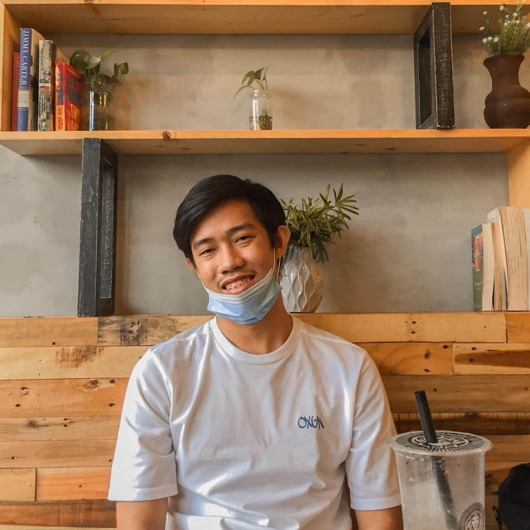

Greetings Everyone!
I am Christian Jules G. Andico. I am 19 years old, born on November 21, 2001. I live in Zone 4 Calong-calong, Barangay Singcang Airport, Bacolod City. I am currently living with my family. My mother is Shiela G. Andico and my father is Jose Maria Joy L. Andico. I have 2 siblings, they are Christopher Lloyd, who is in high school and Aliyah Shane who is in elementary. I am the oldest among my siblings. My father went abroad when I was still in kindergarten, in order for him to support us.
I am currently in college and I enrolled in University of Negros Occidental - Recoletos with the course of Bachelor of Science in Information Technology. My goal in life is to be a professional programmer in the area of game development. My plans in life are, to finish college, to do my dream job and to marry and have my own family and also someday, I can pay back the hard work and sacrifices my family has done to me.
My inspirations in life are my family, friends and hopefully the woman in my life. My family because they were in my life from the start until now. They nurtured me, guided me and supported me all throughout the journeys in my life. My friends also because they are the ones who helped me to stand up when I was in my lowest point in my life. They never left me and they cheered me up. Hopefully, someday I can find someone who will be with me for the rest of my life. Someone I can be with every step of the way. Someone I can build my own family with and accomplish our goals together.
You can find me at My Social Media Account.